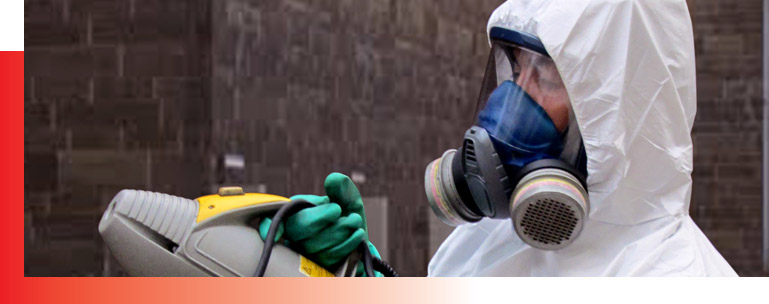
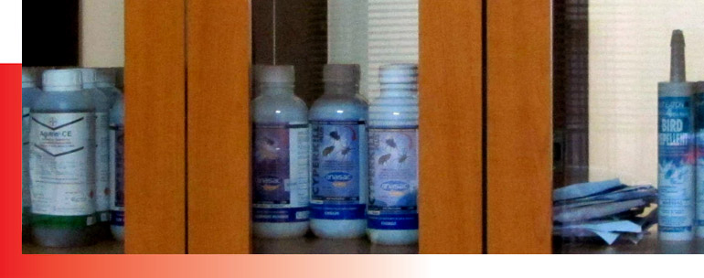
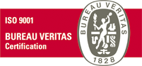
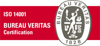
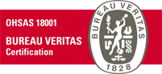

Más de tres décadas de existencia en la Segunda Región. Desinsectación, desratización y sanitización, con un sistema de gestión integrado de calidad, medioambiente y seguridad.
Contactar a Conyser

Comercializamos todos los productos y elementos necesarios para el control de plagas, y asesoramos a nuestros clientes de manera integral.
Aplicamos las normas legales laborales vigentes junto a controles del Sistema de Gestión Integrado de Calidad, Medioambiente y Seguridad y Salud Ocupacional. Certificado por Bureau Veritas.


